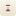

<!doctype html>
<!--
  Template for the Chrome Web Store screenshots, store/listing/0N-*.png.
  ?n=1..5 picks the layout. Shots 1, 2 and 4 frame the real newtab.html in
  an iframe; 3 and 5 show crops of the real settings modal
  (site/assets/customize.webp, tools/store/setup.webp). Shortcut favicons
  come from tools/store/icons/ because headless Chrome has no favicon cache.
  Regenerate with: node tools/store-shots.js
-->
<html lang="en">
<head>
<meta charset="utf-8">
<style>
  @font-face { font-family: 'Instrument Serif'; src: url(../../site/fonts/instrument-serif.woff2) format('woff2'); }
  @font-face { font-family: 'Instrument Serif'; font-style: italic; src: url(../../site/fonts/instrument-serif-italic.woff2) format('woff2'); }
  @font-face { font-family: 'Inter'; src: url(../../site/fonts/inter.woff2) format('woff2'); font-weight: 100 900; }
  :root { --ink: #1a1a1a; --muted: #5d5850; --red: #c62828; }
  html, body { margin: 0; width: 1280px; height: 800px; overflow: hidden; }
  body {
    position: relative;
    background: radial-gradient(120% 90% at 20% 0%, #f4ece6 0%, #efe9e1 45%, #e3dbd0 100%);
    font-family: Inter, system-ui, sans-serif;
    color: var(--ink);
  }
  .eyebrow { display: flex; align-items: center; gap: 14px; color: var(--red);
    font-size: 13px; font-weight: 600; letter-spacing: .32em; text-transform: uppercase; }
  .eyebrow::before, .center .eyebrow::after { content: ''; width: 22px; height: 1px; background: var(--red); }
  h1 { font-family: 'Instrument Serif', Georgia, serif; font-weight: 400;
    font-size: 66px; line-height: 1.02; letter-spacing: -.01em; margin: 18px 0 16px; }
  h1 em { color: var(--red); }
  .sub { color: var(--muted); font-size: 18px; line-height: 1.55; margin: 0 0 30px; }
  ul { list-style: none; margin: 0; padding: 0; display: grid; gap: 20px; }
  li { display: grid; grid-template-columns: 20px 1fr; column-gap: 10px; }
  li::before { content: ''; width: 14px; height: 14px; margin-top: 3px; border-radius: 50%;
    border: 1.5px solid var(--red);
    background: radial-gradient(circle, var(--red) 0 2.5px, transparent 3px); }
  b { font-size: 17px; font-weight: 600; }
  li span { grid-column: 2; color: var(--muted); font-size: 15px; line-height: 1.45; margin-top: 4px; }

  .center { position: absolute; left: 0; right: 0; top: 52px; text-align: center; }
  .center .eyebrow { justify-content: center; }
  .center h1 { font-size: 62px; margin: 14px 0 10px; }
  .center .sub { margin: 0; }
  .side { position: absolute; left: 72px; top: 50%; transform: translateY(-50%); width: 470px; }

  .shadow { box-shadow: 0 1px 0 rgba(0,0,0,.04), 0 30px 60px -20px rgba(60,40,20,.28), 0 0 0 1px rgba(0,0,0,.07); }
  .browser { position: absolute; overflow: hidden; border-radius: 14px; background: #f3efe8; }
  .browser .bar { height: 38px; display: flex; align-items: center; gap: 8px; padding: 0 14px;
    background: #f7f4ee; border-bottom: 1px solid rgba(0,0,0,.06); position: relative; }
  .browser .bar i { width: 11px; height: 11px; border-radius: 50%; background: #d9d4cc; }
  .browser .tab { position: absolute; left: 50%; transform: translateX(-50%); width: 330px; height: 24px;
    border-radius: 7px; background: #ebe6de; display: flex; align-items: center; justify-content: center;
    gap: 8px; font-size: 13px; color: #555; }
  .browser .tab img { width: 13px; height: 13px; }
  .browser iframe { display: block; border: 0; transform-origin: 0 0; }
  .card { position: absolute; border-radius: 18px; background: #fdfcf8 center / 100% auto no-repeat; }
</style>
</head>
<body>
<script>
  var n = Number(new URLSearchParams(location.search).get('n')) || 1;
  var NEWTAB = '../../newtab.html';
  var SHORTCUTS = 'GitHub|github.com,Wikipedia|wikipedia.org,YouTube|youtube.com,Reddit|reddit.com,Figma|figma.com';
  var ME = 'birthday=1991-04-12&sex=male&country=USA&theme=paper';

  function bullets(items) {
    return '<ul>' + items.map(function (it) {
      return '<li><b>' + it[0] + '</b><span>' + it[1] + '</span></li>';
    }).join('') + '</ul>';
  }

  // A browser window around the live new tab. w/h are the frame's size on the
  // canvas; vw/vh are the page's own viewport (scaled to fit the frame's
  // width; a taller page is cropped by the frame, as if scrolled to the top).
  function browser(opts) {
    var scale = opts.w / opts.vw;
    var bar = opts.bar === false ? '' :
      '<div class="bar"><i></i><i></i><i></i><div class="tab">New Tab</div></div>';
    var barH = opts.bar === false ? 0 : 38;
    var vh = opts.vh || Math.ceil((opts.h - barH) / scale);
    return '<div class="browser shadow" style="left:' + opts.x + 'px;top:' + opts.y + 'px;width:' + opts.w +
      'px;height:' + opts.h + 'px">' + bar + '<iframe id="tab" src="' + NEWTAB + '?' + opts.q +
      '" style="width:' + opts.vw + 'px;height:' + vh + 'px;transform:scale(' + scale + ')"></iframe></div>';
  }

  var html = {
    1: '<div class="center"><div class="eyebrow">Memento mori</div>' +
       '<h1>Every new tab, a quiet <em>reminder</em>.</h1>' +
       '<p class="sub">A personal death clock that counts down the days you likely have left — live, to the millisecond.</p></div>' +
       browser({ x: 150, y: 238, w: 980, h: 600, vw: 1180, vh: 820, q: ME + '&ambient=none&shortcuts=' + SHORTCUTS }),
    2: '<div class="side" style="width:400px"><div class="eyebrow">Real-time death rate</div>' +
       '<h1>The world’s pulse,<br><em>live</em>.</h1>' +
       '<p class="sub">Births, deaths and net population change since midnight — ticking up in real time.</p>' +
       bullets([
         ['≈ 2 deaths every second', 'Worldwide, extrapolated from World Bank crude rates'],
         ['Your country or the world', '217 countries — switch with a single click'],
         ['Make it the big number', 'Put today’s deaths front and center instead of your days left'],
       ]) + '</div>' +
       browser({ x: 506, y: 96, w: 860, h: 600, vw: 1180, vh: 800, q: ME + '&ambient=pulse&hero=deaths-world&scope=world' }),
    3: '<div class="card shadow" style="left:104px;top:98px;width:460px;height:604px;background-image:url(../../site/assets/customize.webp)"></div>' +
       '<div class="side" style="left:656px;width:560px"><div class="eyebrow">Customize</div>' +
       '<h1 style="font-size:74px">Make it <em>yours</em>.</h1>' +
       '<p class="sub">Every option previews live — dismiss and it reverts.</p>' +
       bullets([
         ['Five themes, or follow your system', 'Snow, Paper, Dawn, Linen and Midnight'],
         ['Ambient moods', 'Drifting nebula, falling sand, stars, a rising tide, embers or a heartbeat'],
         ['Choose the big number', 'Days left, deaths in your country, or deaths worldwide'],
         ['Your own background', 'Any photo from your device — resized and kept locally'],
       ]) + '</div>',
    4: '<div class="center"><div class="eyebrow">Shortcuts</div>' +
       '<h1>Your favorite sites, <em>one click</em> away.</h1>' +
       '<p class="sub">Pin up to 12 shortcuts under the countdown — icons from Chrome’s own cache, the sites are never contacted.</p></div>' +
       browser({ x: 70, y: 238, w: 1140, h: 518, vw: 912, vh: 760, bar: false, q: ME + '&ambient=none&shortcuts=' + SHORTCUTS }),
    5: '<div class="side" style="width:560px"><div class="eyebrow">Private by design</div>' +
       '<h1>Three answers.<br><em>That’s the whole setup.</em></h1>' +
       '<p class="sub">Birthday, sex and country set your life expectancy — the average for someone your age — or use your own estimate.</p>' +
       bullets([
         ['Nothing leaves your device', 'Stored locally in Chrome — no account, no sign-up, no tracking'],
         ['Open data, works offline', 'UN life tables built in; World Bank rates cached for a week'],
         ['Approximate by design', 'A warning sign, not a diagnosis'],
       ]) + '</div>' +
       '<div class="card shadow" style="left:690px;top:76px;width:460px;height:647px;background-image:url(setup.webp)"></div>',
  }[n];
  document.write(html);

  // Inside the framed new tab: real favicons (headless Chrome has no favicon
  // cache) and, for shot 4, the add-shortcut popover mid-entry.
  var frame = document.getElementById('tab');
  window.ready = !frame;
  if (frame) frame.addEventListener('load', function () {
    var w = frame.contentWindow, d = frame.contentDocument;
    setTimeout(function () {
      d.querySelectorAll('.sc-chip').forEach(function (chip) {
        var name = chip.querySelector('.sc-name').textContent.toLowerCase();
        var ico = chip.querySelector('.sc-ico');
        ico.src = new URL('icons/' + name + '.png', location.href).href;
      });
      if (n === 4) {
        d.querySelector('.sc-add').click();
        d.getElementById('sc-name').value = 'Hacker News';
        var url = d.getElementById('sc-url');
        url.value = 'news.ycombinator.com';
        url.focus();
      }
      setTimeout(function () { window.ready = true; }, 300);
    }, 400);
  });
</script>
</body>
</html>
